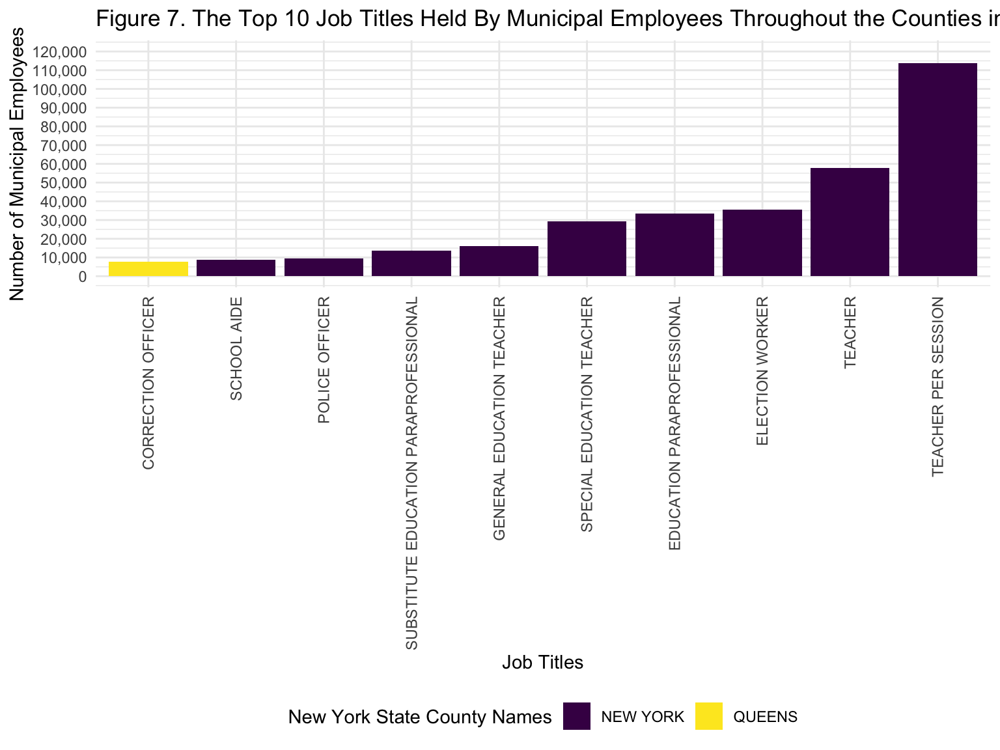

Final Report
library(tidyverse)## ── Attaching packages ─────────────────────────────────────── tidyverse 1.3.2 ──
## ✔ ggplot2 3.4.0 ✔ purrr 0.3.4
## ✔ tibble 3.1.8 ✔ dplyr 1.0.10
## ✔ tidyr 1.2.1 ✔ stringr 1.4.1
## ✔ readr 2.1.2 ✔ forcats 0.5.2
## ── Conflicts ────────────────────────────────────────── tidyverse_conflicts() ──
## ✖ dplyr::filter() masks stats::filter()
## ✖ dplyr::lag() masks stats::lag()library(janitor)##
## Attaching package: 'janitor'
##
## The following objects are masked from 'package:stats':
##
## chisq.test, fisher.testlibrary(viridis)## Loading required package: viridisLitelibrary(plotly)##
## Attaching package: 'plotly'
##
## The following object is masked from 'package:ggplot2':
##
## last_plot
##
## The following object is masked from 'package:stats':
##
## filter
##
## The following object is masked from 'package:graphics':
##
## layoutlibrary(ggplot2)
knitr::opts_chunk$set(
echo = TRUE,
warning = FALSE,
fig.width = 8,
fig.height = 6,
out.width = "90%"
)
options(
ggplot2.continuous.colour = "viridis",
ggplot2.continuous.fill = "viridis"
)
scale_colour_discrete = scale_colour_viridis_d
scale_fill_discrete = scale_fill_viridis_d
theme_set(theme_minimal() + theme(legend.position = "bottom"))payroll_data =
read_csv("data/payroll_data.csv")## Rows: 594234 Columns: 10
## ── Column specification ────────────────────────────────────────────────────────
## Delimiter: ","
## chr (5): agency_name, pay_basis, leave_status, county_name, job_title
## dbl (5): fiscal_year, start_year, base_salary, total_ot_paid, total_other_pay
##
## ℹ Use `spec()` to retrieve the full column specification for this data.
## ℹ Specify the column types or set `show_col_types = FALSE` to quiet this message.
Motivation
New York City (NYC) is recognized as having the largest city and regional economies in the United States (Wikipedia, 2022). If New York City were an individual country, it would be ranked as the 10th largest global economy (Wikipedia, 2022). Our motivation for this project is to use the skills that we have learned in Data Science I and apply them to answer imperative questions about NYC, such as which NYC borough yields the highest and lowest average total pay, which would combine salary, overtime, and other pay, in 2022 from data related to New York City’s budget on the salaries and overtime pay of municipal employees.
Cities around the country suffered greatly from the worst pandemic hit and the prospects of a recession began stirring fears of what the next couple of years will hold.Cities are more cautious about spending its budget compared to the previous years in response to COVID -19. As a result, many states and municipalities have made cuts, frozen spending and hiring, laid off workers and cut down the funds. Our project is to provide a visualization on how the City’s budget is being spent on salary and for the interest of the public as well as for those recent graduates looking for opportunities in City jobs, New York by conducting statistical analysis to evaluate the significant differences in base salary counties.
Questions and Planned Analyses
- Which borough had the most violations? Which borough paid the most in fines?
- What did the distribution of violations look like over other variables in the dataset borough, date, vehicle type?
- Were the number of parking violations related to fire hydrants the same across the five boroughs? Can we find the hydrants that seem to be ticketed the most commonly?
Data Processing and Cleaning
The data that was used for this project is from a NYC Open Data webpage (hyperlink this) entitled “Citywide Payroll Data (Fiscal Year)”. It was collected with the purpose of understanding how New York City’s budget is utilized on salary and overtime pay for all municipal employees. However, it is important to note that the data contains information pertaining to municipal employees throughout various counties in New York State. This source of data is updated annually and was last updated on October 28, 2022. The raw data consisted of 5,109,775 rows and 17 columns, which were fiscal year, payroll number, the name of the agency, last name of the employee, first name of the employee, middle initial of the employee, the date that the employee started working for the agency, the borough of the employee’s primary work location, the civil service title description, the leave status of the employee at the end of the fiscal year on June 30th, the base salary of the employee, pay basis, the number of regular hours that the employee worked in the fiscal year, the amount paid to the employee for base salary during the fiscal year, overtime hours worked by the employee during the fiscal year, the total overtime pay that was paid to the employee in the fiscal year, and total other pay. The borough of the employee’s primary work location variable are counties throughout New York State instead of just being the five boroughs in New York City. The pay basis is whether is the employee was paid by hour, per diem, or annually. The total other pay variable is any financial compensation in addition to overtime pay and gross salary, which would include lump sums, meal allowance, settlement amounts, differentials, uniform allowance, retroactive pay increases, and bonus pay. This data does not show salary increases that are received during any one fiscal year.
The data was read into R as a .csv file using the “read_csv” function. All of the variable names were then changed to lowercase and an underscore was used between spaces by using the “clean_names” function. We then filtered the data to only include records from the fiscal year of 2022. We also filtered the data to remove records containing “NA”, “OTHER”, and “WASHINGTON DC” for the “work_location_borough” variable. In addition, we also filtered the data to remove records consisting of “ON SEPARATION LEAVE” and “SEASONAL” for the “leave_status_as_of_june_30” variable, and removed records containing “NA” for the “title_description” variable. The “agency_start_date” variable, which is the date that the employee started at the agency, was separated into three variables, “month”, “day”, and “start_year”. The variables “leave_status_as_of_june_30”, “work_location_borough”, and “title_description” were duplicated and renamed into “leave_status”, “county_name”, and “job_title”, respectively. The records containing “per Annum”, “per Day”, and “per Hour” for the pay basis variable were recoded into “Annually”, “Daily”, and “Hourly”, respectively. The records containing “MANHATTAN” and “BROOKLYN” for the county name variable were recoded into “New York” and “Kings”, respectively. The variables of payroll number, first name of the employee, last name of the employee, middle initial of the employee, month of the employee’s start date, day of the employee’s start date, the duplicated “leave_status_as_of_june_30”, the duplicated “work_location_borough”, the number of regular hours that the employee worked in the fiscal year, the amount paid to the employee for base salary during the fiscal year, and the overtime hours worked by the employee during the fiscal year were then removed from the data. The variables for county name, pay basis, and leave status were changed from a character data type to a factor. The variable for “title_description” was then duplicated and renamed into “job_title”. The duplicated “title_description” variable was then removed from the data. The data that was cleaned resulted in 594,234 records and 10 columns.
EDA
Exploratory analysis for our primary outcome of whether there is a significant difference in the mean base salary of employees in New York State by county in 2022.
Mean Base Salary By New York State Counties
mean_base_salary_plot =
payroll_data %>%
group_by(county_name) %>%
summarize(
mean_base_salary = mean(base_salary, na.rm = TRUE)) %>%
ggplot(aes(x = reorder(county_name, mean_base_salary), y = mean_base_salary, fill = county_name)) +
geom_bar(position = "dodge", stat = "identity") +
scale_y_continuous(
labels = scales::comma) +
labs(
x = "County Names",
y = "Mean Base Salary",
title = "The Average Base Salary for Municipal Employees of New York State By County",
fill = "New York State County Names"
) +
theme(axis.text.x = element_text(angle = 80, vjust = 0.5, hjust = 0.50))
mean_base_salary_plot
This figure (1) illustrates that Albany county has the highest mean base salary for its municipal employees, while Nassau county has the lowest average base salary and New York county has the second lowest mean base salary. All of the other counties have similar average base salaries. However, we hypothesized that New York county would have the highest mean salary as it serves as a major financial center within the United States compared to Albany county, which is the capital of New York State.
Total Other Pay by New York Counties
An exploratory analysis was performed to understand the median total other pay for municipal employees throughout New York State by county in 2022 through a boxplot.
median_tibble =
payroll_data %>%
group_by(county_name) %>%
summarise(median_total_other_pay = median(total_other_pay))
median_other_pay_plot =
payroll_data %>%
left_join(median_tibble, by = "county_name") %>%
ggplot(aes(x = reorder(county_name, median_total_other_pay), y = total_other_pay, fill = county_name)) +
geom_boxplot() +
scale_y_continuous(
labels = scales::comma,
limits = c(-20000, 40000),
breaks = seq(-20000, 40000, by = 10000)) +
labs(
x = "County Names",
y = "Median Total Other Types of Pay",
title = "The Median Total Other Pay for Municipal Employees of New York State By County",
fill = "New York State County Names"
) +
theme(axis.text.x = element_text(angle = 90, vjust = 0.5, hjust = 0.5))
median_other_pay_plot
Figure (2) demonstrates that New York county has the lowest median for total other pay, which is relatively close to 0 dollars, while Schoharie county has the highest median for total other pay, which is relatively above 5000 dollars for municipal workers. We did not expect New York county to have the lowest median for total other pay, but instead be one of the counties with the highest median for total other pay due to the large population and number of job titles within this county. All of the other counties have relatively similar medians for total other pay in 2022. It is also important to note that New York county has the greatest number of outliers, which may be due to the large population within this county. Based on our previous finding, Queens, Bronx, and Kings counties also have high numbers of outliers, which may also be due to the large populations within these counties. There are counties that do not have any outliers, such as Sullivan, Delaware, Greene, and Orange counties. This figure also illustrates that there are employees in some of the counties that have negative values for other types of pay, which can include lump sums, meal allowance, settlement amounts, differentials, uniform allowance, retroactive pay increases, and bonus pay. These other forms of payment would explain why there are negative values for this variable.
Median Overtime Paid By New York State Counties
Median total overtime pay for municipal employees in New York State by its counties in 2022 is displayed in the boxplot.
overtime_tibble =
payroll_data %>%
group_by(county_name) %>%
summarise(median_total_ot_paid = median(total_ot_paid))
median_ot_paid_plot =
payroll_data |>
left_join(overtime_tibble, by = "county_name") |>
ggplot(aes(x = reorder(county_name, median_total_ot_paid ), y = total_ot_paid,
fill = county_name)) +
geom_boxplot() +
scale_y_continuous(
labels = scales::comma,
limits = c(-5000, 32500),
breaks = seq(-5000, 32500, by = 5000)) +
labs(
x = "County Names",
y = "Total Overtime Paid",
title = "Total Overtime Paid By Each County",
fill = "New York State County Names"
) +
theme(axis.text.x = element_text(angle = 90, vjust = 0.5, hjust = 1))
median_ot_paid_plotFigure (3) illustrated that New York county was among the lowest median counties for total overtime along with Albany, Nassau, New York and Orange which was close to 0 dollars, while Greene ranked highest median for total overtime pay with around 7000 dollars. This pattern is similar to that of New York County for median for total other pay where it placed the lowest. (graphic). We assumed that since New York County has a big market with more opportunities and its hard working lifestyle will allow employees to benefit more from overtime pay. This finding contracted with our hypothesis and median for prorated annual base salary (figure 4) where New York County ranked highest. In addition, it was noticeable that New York county has the greatest number of outliers, which may be due to the large population within this county whereas Greene, Orange and Dutchess counties did have outliers.
Median Base Salary By Pay basis By New York State Counties (Annually)
Boxplots was created to illustrate the differences in the median base salary by annually, daily, hourly, and based on prorated for all New York state counties .
pay_basis_tibble =
payroll_data %>%
filter(pay_basis == "Annually") |>
group_by(county_name) %>%
summarise(median_base_salary = median(base_salary))
Median_base_salary_plot_annually =
payroll_data %>%
filter(pay_basis == "Annually") |>
left_join(pay_basis_tibble, by = "county_name") %>%
ggplot(aes(x = reorder(county_name, median_base_salary), y = base_salary,
fill = county_name)) +
geom_boxplot() +
scale_y_continuous(
labels = scales::comma,
limits = c(20000, 150000),
breaks = seq(20000, 150000, by = 10000)) +
labs(
x = "County Names",
y = " Base Salary",
title = "Annual Median Base Salary For Each County",
fill = "New York State County Names"
) + theme(axis.text.x = element_text(angle = 90, vjust = 0.5, hjust = 1))
Median_base_salary_plot_annuallyFigure(4) shows the annual median base salary for municipal employees of New York State by county. According to this Figure(1), Orange, Greene, Putnam and Bronx has the lowest median base salary around 60,000 for its municipal employees, whereas Albany has the highest median base salary with around 85, 000 USD followed by New York county. Compared to the mean base salary, median base salary in New York States was significantly higher and placed second from the top after Albany, which was similar to our hypothesis that New York County would have a higher income level.
Median Base Salary By Pay basis By New York State Counties (Daily) Plot
pay_basis_daily_tibble =
payroll_data %>%
filter(pay_basis == "Daily") |>
group_by(county_name) |>
summarise(median_base_salary_daily = median(base_salary))
Median_base_salary_plot_daily =
payroll_data %>%
filter(pay_basis == "Daily") |>
left_join(pay_basis_daily_tibble, by = "county_name") %>%
ggplot(aes(x = reorder(county_name, median_base_salary_daily) ,
y = base_salary, fill = county_name)) +
geom_boxplot() +
scale_y_continuous(
labels = scales::comma,
limits = c(0,625),
breaks = seq(0, 625, by = 50)) +
labs(
x = "County Names",
y = " Base Salary",
title = "Daily Median Base Salary For Each County",
fill = "New York State County Names"
) + theme(axis.text.x = element_text(angle = 90, vjust = 0.5, hjust = 1))
Median_base_salary_plot_daily
Figure(5) shows the daily median base salary for municipal employees of New York State by county. The daily median salary ranged between 50 to 65 dollars. Figure b illustrates that Bronx, Delaware, Queens and Ulster have the lowest daily median base salary which was around 350 dollars while Albany, Dutchess and Greene ranked highest with 500 dollars. The rest of the counties placed in between above values. Daily median base salary for New York County has many outliers indicating that median values are not suitable to compute since the range of the daily base salary varied greatly.
Median Base Salary By Pay basis By New York State Counties (Hourly)
pay_basis_hourly_tibble=
payroll_data %>%
filter(pay_basis == "Hourly") |>
group_by(county_name) %>%
summarise(median_base_salary_hourly = median(base_salary))
Median_base_salary_plot_hourly =
payroll_data %>%
filter(pay_basis == "Hourly") |>
left_join(pay_basis_hourly_tibble, by = "county_name") %>%
ggplot(aes(x = reorder(county_name, median_base_salary_hourly),
y = base_salary, fill = county_name)) +
geom_boxplot() +
scale_y_continuous(
labels = scales::comma,
limits = c(0,95),
breaks = seq(0,95, by = 10)) +
labs(
x = "County Names",
y = " Base Salary",
title = "Hourly Median Base Salary For Each County",
fill = "New York State County Names"
) + theme(axis.text.x = element_text(angle = 90, vjust = 0.5, hjust = 1))
Median_base_salary_plot_hourly
Figure(6) illustrates hourly median base salary for municipal employees of New York State by county. The hourly median salary ranged between 0 to 95 dollars. Figure 3 illustrates that New York County has the lowest hourly median base salary with 0 dollars while Nassau ranked highest around 65 to 70 dollars followed by Dutchess and Sullivan, Schoharie respectivly. It shows that highly populated counties have lower hourly median base salary compared to less populated counties.
Median Base Salary By Pay basis By New York State Counties (Prorated)
pay_basis_prorated_tibble =
payroll_data %>%
filter(pay_basis == "Prorated Annual") |>
group_by(county_name) %>%
summarise(median_base_salary_prorated = median(base_salary))
Median_base_salary_plot_prorated =
payroll_data %>%
filter(pay_basis == "Prorated Annual") |>
left_join(pay_basis_prorated_tibble, by = "county_name") %>%
ggplot(aes(x = reorder(county_name, median_base_salary_prorated),
y = base_salary, fill = county_name)) +
geom_boxplot() +
scale_y_continuous(
labels = scales::comma,
limits = c(5000,85000),
breaks = seq(5000, 85000, by = 10000)) +
labs(
x = "County Names",
y = " Base Salary",
title = "Prorated Annual Median Base Salary For Each County",
fill = "New York State County Names"
) + theme(axis.text.x = element_text(angle = 90, vjust = 0.5, hjust = 1))
Median_base_salary_plot_prorated
Figure(7) displays prorated median base salary for municipal employees of New York State by county. A prorated salary is when an employee gets paid based on the number of hours or days they work in a pay period, instead of their regular salary. When compared to annual median base salary, prorated median base salary was highest for Ulster followed by New York Country where Bronx and Richmond ranked the lowest. This indicates that employees in Ulster and New York Counties work longer hours and with extra days. This finding is in line with our hypothesis that the Median Base Salary for New York County was higher according to its prorated values.
Total Number of Job Titles by New York State Counties Plot
We also performed exploratory analysis by investigating the number of job titles that are held by municipal employees in New York State by county in 2022 through a bar graph.
number_job_titles_plot =
payroll_data %>%
group_by(county_name, job_title) %>%
summarise(count = n()) %>%
ungroup() %>%
group_by(county_name) %>%
summarise(count = n()) %>%
ggplot(aes(x = reorder(county_name, count), y = count, fill = county_name)) +
geom_bar(position = "dodge", stat = "identity") +
scale_y_continuous(
labels = scales::comma,
limits = c(0, 1500),
breaks = seq(0, 1500, by = 250)) +
labs(
x = "County Names",
y = "Number of Job Titles",
title = "The Number of Job Titles Held By Municipal Employees of New York State By County",
fill = "New York State County Names"
) +
theme(axis.text.x = element_text(angle = 90, vjust = 0.5, hjust = 1)) ## `summarise()` has grouped output by 'county_name'. You can override using the
## `.groups` argument.number_job_titles_plotFigure (8) conveys the number of job titles that are held by employees within each of the 16 counties in New York State. This figure demonstrates that Orange county has the lowest number of job titles, while Albany has the third lowest number of job titles. It is important to note that each of the five boroughs in New York City are among the counties that have the five highest counts of job titles that are held by municipal employees in 2022: New York county has the highest, which was expected; Queens county has the second highest number; Kings county has the third highest number; Bronx has the fourth highest number; Richmond has the fifth highest number. We did expect that New York county would have the highest number of job titles held by municipal employees and we also expected that the other boroughs of New York City would also have among the highest counts due to the large size of the populations within each of these counties within New York City. All of the other counties within New York State may have low frequencies of job titles that are held by municipal workers in 2022, because of their smaller population sizes.
Top 10 Job Titles Throughout the New York State Counties
Furthermore, an exploratory analysis was conducted to comprehend the top ten job titles that are held by municipal workers throughout the counties in New York State in 2022 through a bar graph.
job_frequency =
payroll_data %>%
group_by(county_name, job_title) %>%
summarise(job_frequency = n()) %>%
arrange(desc(job_frequency)) %>%
ungroup()## `summarise()` has grouped output by 'county_name'. You can override using the
## `.groups` argument.job_frequency_data =
job_frequency %>%
top_n(job_frequency, n = 10) %>%
mutate(
job_title = recode(job_title, "TEACHER- PER SESSION" = "TEACHER PER SESSION"),
job_title = recode(job_title, "ANNUAL ED PARA" = "EDUCATION PARAPROFESSIONAL"),
job_title = recode(job_title, "TEACHER SPECIAL EDUCATION" = "SPECIAL EDUCATION TEACHER"),
job_title = recode(job_title, "TEACHER-GENERAL ED" = "GENERAL EDUCATION TEACHER"),
job_title = recode(job_title, "SUBSTITUTE ED PARA" = "SUBSTITUTE EDUCATION PARAPROFESSIONAL"),
job_title = recode(job_title, "F/T SCHOOL AIDE" = "SCHOOL AIDE"))
job_frequency_plot =
job_frequency_data %>%
ggplot(aes(x = reorder(job_title, job_frequency), y = job_frequency, fill = county_name)) +
geom_bar(position = "dodge", stat = "identity") +
scale_y_continuous(
labels = scales::comma,
limits = c(0, 120000),
breaks = seq(0, 120000, by = 10000)) +
labs(
x = "Top 10 Job Titles",
y = "Frequency of Job Titles",
title = "The Top 10 Job Titles Held By Municipal Employees Throughout the Counties in New York State",
fill = "New York State County Names"
) +
theme(axis.text.x = element_text(angle = 90, vjust = 0.5, hjust = 1))
job_frequency_plotBased on Figure (9), the top ten job titles by frequency are Correction Officer, School Aide, Police Officer, Substitute Education Paraprofessional, General Education Teacher, Special Education Teacher, Education Paraprofessional, Election Worker, Teacher, and Teacher Per Session, respectively in ascending order. The top 9 job titles by frequency were in New York county with Teacher Per Session being the job title with the highest frequency. The job title with the 10th highest frequency was in Queens county and was a Correction Officer. We did predict that one of the teacher job titles would be the job title with the highest frequency, but we did not expect that it would be the Teacher Per Session job title. We also expected that all of the top 10 job titles with the highest frequencies would be in New York County. Overall, this figure supports some of our predictions and illustrates that the job title with the highest frequency in Queens is a Correction Officer.
The Top Five Job Titles Held by Municipal Employees in Six New York State Counties
top5_freq =
payroll_data %>%
filter(county_name %in% c("NEW YORK", "KINGS", "BRONX", "QUEENS", "RICHMOND","ALBANY")) %>%
group_by(county_name, job_title) %>%
summarise(number_of_people = n()) %>%
arrange(desc(number_of_people)) %>%
slice(1:5)## `summarise()` has grouped output by 'county_name'. You can override using the
## `.groups` argument.top5_freq_n =
top5_freq %>%
mutate(
job_title = as.factor(job_title),
job_title = recode(job_title, "TEACHER- PER SESSION" = "TEACHER PER SESSION"),
job_title = recode(job_title, "ANNUAL ED PARA" = "EDUCATION PARAPROFESSIONAL"),
job_title = recode(job_title, "TEACHER SPECIAL EDUCATION" = "SPECIAL EDUCATION TEACHER"),
job_title = recode(job_title, "ASST DIR OF INTERGVNMENTAL RELTNS FOR THE ALBANY OFFICE" = "ASSISTANT DIRECTOR OF INTERNATIONAL RELATIONS"),
job_title = recode(job_title, "EMERGENCY MEDICAL SPECIALIST-EMT" = "EMT"))
top_plot =
ggplot(top5_freq_n, aes(x = reorder(job_title, number_of_people), y = number_of_people)) + geom_point(aes(color = county_name), alpha = 0.5) +
scale_y_continuous(
labels = scales::comma,
limits = c(0,120000),
breaks = seq(0, 120000, by = 15000)) +
labs(title = "The Top Five Job Titles Held by Municipal Employees in Six New York State Counties",x = "Job Title", y = "Number of Municipal Employees") +
guides(color = guide_legend(title = "New York State County Names")) +
theme(axis.text.x = element_text(angle = 90, vjust = 0.5, hjust = 1))
top_plot
Top 10 Job Titles Throughout the New York County
Furthermore, an exploratory analysis on top jobs for New York County and Albany was conducted to comprehend our earlier analysis on Mean base salary where New York county ranked second lowest from mean base salary while Albany ranked highest Figure (11, 12).
job_frequency_newyork =
payroll_data %>%
filter(county_name == "NEW YORK") |>
group_by(county_name, job_title) %>%
summarise(job_frequency = n()) %>%
arrange(desc(job_frequency)) %>%
ungroup()## `summarise()` has grouped output by 'county_name'. You can override using the
## `.groups` argument.job_frequency_newyork_data =
job_frequency_newyork %>%
top_n(job_frequency, n = 10) %>%
mutate(
job_title = recode(job_title, "TEACHER- PER SESSION" = "TEACHER PER SESSION"),
job_title = recode(job_title, "ANNUAL ED PARA" = "EDUCATION PARAPROFESSIONAL"),
job_title = recode(job_title, "TEACHER SPECIAL EDUCATION" = "SPECIAL EDUCATION TEACHER"),
job_title = recode(job_title, "TEACHER-GENERAL ED" = "GENERAL EDUCATION TEACHER"),
job_title = recode(job_title, "SUBSTITUTE ED PARA" = "SUBSTITUTE EDUCATION PARAPROFESSIONAL"),
job_title = recode(job_title, "F/T SCHOOL AIDE" = "SCHOOL AIDE"))
job_frequency_newyork_plot =
job_frequency_newyork_data %>%
ggplot(aes(x = reorder(job_title, job_frequency), y = job_frequency, fill = county_name)) +
geom_bar(position = "dodge", stat = "identity") +
scale_y_continuous(
labels = scales::comma,
limits = c(0, 120000),
breaks = seq(0, 120000, by = 10000)) +
labs(
x = "Top 10 Job Titles",
y = "Frequency of Job Titles",
title = "The Top 10 Job Titles Held By Municipal Employees in New York County",
fill = "New York State County Names"
) +
theme(axis.text.x = element_text(angle = 90, vjust = 0.5, hjust = 1))
job_frequency_newyork_plot
Top 10 Job Titles Throughout Albany County
job_frequency_albany =
payroll_data %>%
filter(county_name == "ALBANY") |>
group_by(county_name, job_title) %>%
summarise(job_frequency = n()) %>%
arrange(desc(job_frequency)) %>%
ungroup()## `summarise()` has grouped output by 'county_name'. You can override using the
## `.groups` argument.job_frequency_albany_data =
job_frequency_albany %>%
top_n(job_frequency, n = 10) %>%
mutate(
job_title = recode(job_title, "TEACHER- PER SESSION" = "TEACHER PER SESSION"),
job_title = recode(job_title, "ANNUAL ED PARA" = "EDUCATION PARAPROFESSIONAL"),
job_title = recode(job_title, "TEACHER SPECIAL EDUCATION" = "SPECIAL EDUCATION TEACHER"),
job_title = recode(job_title, "TEACHER-GENERAL ED" = "GENERAL EDUCATION TEACHER"),
job_title = recode(job_title, "SUBSTITUTE ED PARA" = "SUBSTITUTE EDUCATION PARAPROFESSIONAL"),
job_title = recode(job_title, "F/T SCHOOL AIDE" = "SCHOOL AIDE"))
job_frequency_albany_plot =
job_frequency_albany_data %>%
ggplot(aes(x = reorder(job_title, job_frequency), y = job_frequency, fill = county_name)) +
geom_bar(position = "dodge", stat = "identity") +
scale_y_continuous(
labels = scales::comma,
limits = c(0, 5),
breaks = seq(0, 5, by = 1)) +
labs(
x = "Top 10 Job Titles",
y = "Frequency of Job Titles",
title = "The Top 10 Job Titles Held By Municipal Employeesin Albany County",
fill = "New York State County Names"
) +
theme(axis.text.x = element_text(angle = 90, vjust = 0.5, hjust = 1))
job_frequency_albany_plot
We assumed that the top ten job titles would explain this finding. Based on Figure 6,7 , the top ten job titles in New York County are community associate, school aide, police officer, substitute education, election worker, teacher and Teacher Per Session. However, there were only 6 top titles in Albany, which are supervisor, assistant director, special assistant, watershed maintainer, assistant legislative representative. As we expected these top job titles explained our main finding on mean salary that top 6 job titles were higher rank jobs as compared to New York County.
Pie Chart for Percentages of Municipal Employees by Leave Status Across All Counties
Total_ls = table(pull(payroll_data,leave_status))
Total_ls##
## ACTIVE CEASED ON LEAVE
## 481781 102360 10093labels = c("Active", "Ceased", "On Leave")
piepercent = round(100 * Total_ls / sum(Total_ls), 1)
par(xpd = TRUE)
pie(Total_ls, labels = paste(labels, sep = " ", piepercent, "%"),
main = "Percentages of Municipal Employees by Leave Status Across All Counties", col = viridis(length(Total_ls)))
legend("topright", c("Active", "Ceased", "On Leave"),cex = 0.9, fill = viridis(length(Total_ls)))
Bar Graph for the Number of Municipal Employees by Leave Status in New York State
Ls_bar =
payroll_data %>%
group_by(leave_status) %>%
summarise(
count = n()
)
ggplot(Ls_bar, aes(x = leave_status, y = count, fill = leave_status)) +
geom_bar(position = "dodge", stat = "identity") +
labs(
title = "The Number of Municipal Employees by Leave Status in New York State",
x = "Leave Status",
y = "Number of Municipal Employees",
fill = "Leave Status"
) +
scale_y_continuous(labels = scales::comma)